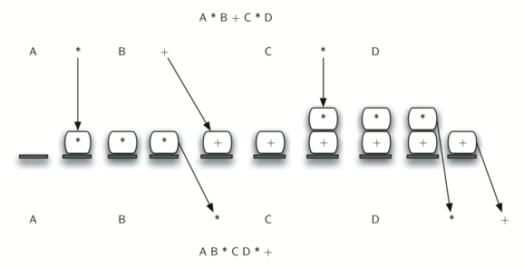

An infix expression is a standard mathematical notation in which operators are written between the operands they act on. It is the most commonly used expression format in most programming languages, including C++. In this format, the operator is placed between the two operands. For example, the addition of two numbers a and b is represented as a + b. Example: (a + b) * c
When you write an arithmetic expression such as B * C, the form of the expression provides you with information so that you can interpret it correctly. In this case we know that the variable B is being multiplied by the variable C since the multiplication operator * appears between them in the expression. This type of notation is referred to as infix since the operator is in between the two operands that it is working on.
Consider another infix example, A + B * C. The operators + and * still appear between the operands, but there is a problem. Which operands do they work on first? Does the + work on A and B or does the * take B and C? The expression seems ambiguous.
In fact, you have been reading and writing these types of expressions for a long time and they do not cause you any problem. The reason for this is that you know something about the operators + and *. Each operator has a precedence level. Operators of higher precedence are used before operators of lower precedence. The only thing that can change that order is the presence of parentheses. The precedence order for arithmetic operators places multiplication and division above addition and subtraction. If two operators of equal precedence appear, then a left-to-right ordering or associativity is used.
Lets interpret the troublesome expression A + B * C using operator precedence. B and C are multiplied first, and A is then added to that result. (A + B) * C would force the addition of A and B to be done first before the multiplication. In expression A + B + C, by precedence (via associativity), the leftmost + would be done first.
Although all this may be obvious to you, remember that computers need to know exactly what operators to perform and in what order. One way to write an expression that guarantees there will be no confusion with respect to the order of operations is to create what is called a fully parenthesized expression. This type of expression uses one pair of parentheses for each operator. The parentheses dictate the order of operations; there is no ambiguity. There is also no need to remember any precedence rules.
The expression A + B * C + D can be rewritten as ((A + (B * C)) + D) to show that the multiplication happens first, followed by the leftmost addition. A + B + C + D can be written as (((A + B) + C) + D) since the addition operations associate from left to right.
There are two other very important expression formats that may not seem obvious to you at first. Consider the infix expression A + B. What would happen if we moved the operator before the two operands? The resulting expression would be + A B. Likewise, we could move the operator to the end. We would get A B +. These look a bit strange.
These changes to the position of the operator with respect to the operands create two new expression formats, prefix and postfix. Prefix expression notation requires that all operators precede the two operands that they work on. Postfix, on the other hand, requires that its operators come after the corresponding operands. A few more examples should help to make this a bit clearer (see Table3.9.2).
In prefix, A + B * C would be written as + A * B C . The multiplication operator comes immediately before the operands B and C, denoting that * has precedence over +. The addition operator then appears before the A and the result of the multiplication.
In postfix, the expression A + B * C would be A B C * +. Again, the order of operations is preserved since the * appears immediately after the B and the C, denoting that * has precedence, with + coming after. Although the operators moved and now appear either before or after their respective operands, the order of the operands stayed exactly the same relative to one another.
Table3.9.2.
Infix Expression
Prefix Expression
Postfix Expression
A + B
+ A B
A B +
A + B * C
+ A * B C
A B C * +
Now consider the infix expression (A + B) * C. Recall that in this case, infix requires the parentheses to force the performance of the addition before the multiplication. However, when A + B was written in prefix, the addition operator was simply moved before the operands, + A B. The result of this operation becomes the first operand for the multiplication. The multiplication operator is moved in front of the entire expression, giving us * + A B C. Likewise, in postfix A B + forces the addition to happen first. The multiplication can be done to that result and the remaining operand C. The proper postfix expression is then A B + C *.
Consider these three expressions again (see Table3.9.3). Something very important has happened. Where did the parentheses go? Why dont we need them in prefix and postfix? The answer is that the operators are no longer ambiguous with respect to the operands that they work on. Only infix notation requires the additional symbols. The order of operations within prefix and postfix expressions is completely determined by the position of the operator and nothing else. In many ways, this makes infix the least desirable notation to use.
Table3.9.3.
Infix Expression
Prefix Expression
Postfix Expression
(A + B) * C
* + A B C
A B + C *
Table3.9.4 shows some additional examples of infix expressions and the equivalent prefix and postfix expressions. Be sure that you understand how they are equivalent in terms of the order of the operations being performed.
Table3.9.4.
Infix Expression
Prefix Expression
Postfix Expression
A + B * C + D
+ + A * B C D
A B C * + D +
(A + B) * (C + D)
* + A B + C D
A B + C D + *
A * B + C * D
+ * A B * C D
A B * C D * +
A + B + C + D
+ + + A B C D
A B + C + D +
Subsection3.9.1Conversion of Infix Expressions to Prefix and Postfix
Definition3.9.5.
A prefix expression, also known as Polish notation, is a mathematical notation in which every operator follows all of its operands. The primary advantage of prefix notation is that it completely eliminates the need for parentheses to indicate orders of operations. The order in which operations are to be performed is evident from the position of the operators and operands. Example: For the infix expression (a + b) * c, the corresponding prefix notation is * + a b c.
So far, we have used ad hoc methods to convert between infix expressions and the equivalent prefix and postfix expression notations. As you might expect, there are algorithmic ways to perform the conversion that allow any expression of any complexity to be correctly transformed.
The first technique that we will consider uses the notion of a fully parenthesized expression that was discussed earlier. Recall that A + B * C can be written as (A + (B * C)) to show explicitly that the multiplication has precedence over the addition. On closer observation, however, you can see that each parenthesis pair also denotes the beginning and the end of an operand pair with the corresponding operator in the middle.
Look at the right parenthesis in the subexpression (B * C) above. If we were to move the multiplication symbol to that position and remove the matching left parenthesis, giving us B C *, we would in effect have converted the subexpression to postfix notation. If the addition operator were also moved to its corresponding right parenthesis position and the matching left parenthesis were removed, the complete postfix expression would result (see Figure3.9.6).
Figure3.9.6.Moving Operators to the Right for Postfix Notation
If we do the same thing but instead of moving the symbol to the position of the right parenthesis, we move it to the left, we get prefix notation (see Figure3.9.7). The position of the parenthesis pair is actually a clue to the final position of the enclosed operator.
Figure3.9.7.Moving Operators to the Left for Prefix Notation
So in order to convert an expression, no matter how complex, to either prefix or postfix notation, fully parenthesize the expression using the order of operations. Then move the enclosed operator to the position of either the left or the right parenthesis depending on whether you want prefix or postfix notation.
Here is a more complex expression: (A + B) * C - (D - E) * (F + G). Figure3.9.8 shows the conversion to postfix and prefix notations.
Figure3.9.8.Converting a Complex Expression to Prefix and Postfix Notations
A postfix expression, commonly known as Reverse Polish notation (RPN), is a mathematical notation in which every operator follows its operands. Postfix notation has the advantage of being able to represent a mathematical expression without the need for parentheses, which simplifies the algorithm to process the expression. The order of operations is determined by the position of the operator in relation to its operands. Example: For the infix expression (a + b) * c, the corresponding postfix notation is a b + c *.
We need to develop an algorithm to convert any infix expression to a postfix expression. To do this we will look closer at the conversion process.
Consider once again the expression A + B * C. As shown above, A B C * + is the postfix equivalent. We have already noted that the operands A, B, and C stay in their relative positions. It is only the operators that change position. Lets look again at the operators in the infix expression. The first operator that appears from left to right is +. However, in the postfix expression, + is at the end since the next operator, *, has precedence over addition. The order of the operators in the original expression is reversed in the resulting postfix expression.
As we process the expression, the operators have to be saved somewhere since their corresponding right operands are not seen yet. Also, the order of these saved operators may need to be reversed due to their precedence. This is the case with the addition and the multiplication in this example. Since the addition operator comes before the multiplication operator and has lower precedence, it needs to appear after the multiplication operator is used. Because of this reversal of order, it makes sense to consider using a stack to keep the operators until they are needed.
What about (A + B) * C? Recall that A B + C * is the postfix equivalent. Again, processing this infix expression from left to right, we see + first. In this case, when we see *, + has already been placed in the result expression because it has precedence over * by virtue of the parentheses. We can now start to see how the conversion algorithm will work. When we see a left parenthesis, we will save it to denote that another operator of high precedence will be coming. That operator will need to wait until the corresponding right parenthesis appears to denote its position (recall the fully parenthesized technique). When that right parenthesis does appear, the operator can be popped from the stack.
As we scan the infix expression from left to right, we will use a stack to keep the operators. This will provide the reversal that we noted in the first example. The top of the stack will always be the most recently saved operator. Whenever we read a new operator, we will need to consider how that operator compares in precedence with the operators, if any, already on the stack.
Assume the infix expression is a string of tokens delimited by spaces. The operator tokens are *, /, +, and -, along with the left and right parentheses, ( and ). The operand tokens are the single-character identifiers A, B, C, and so on. The following steps will produce a string of tokens in postfix order.
Create an empty stack called opstack for keeping operators. Create an empty vector for output.
Scan the current token of the input vector from left to right (using a loop).
If the token is an operand, append it to the end of the output list(vector).
If the token is a left parenthesis, push it on the opstack.
If the token is a right parenthesis, pop the opstack until the corresponding left parenthesis is removed. Append each operator to the end of the output vector.
If the token is an operator, *, /, +, or -, push it on the opstack. However, first remove any operators already on the opstack that have higher or equal precedence and append them to the output vector.
When the input expression has been completely processed, check the opstack. Any operators still on the stack can be removed and appended to the end of the output vector.
Figure3.9.10 shows the conversion algorithm working on the expression A * B + C * D. Note that the first * operator is removed upon seeing the + operator. Also, + stays on the stack when the second * occurs, since multiplication has precedence over addition. At the end of the infix expression the stack is popped twice, removing both operators and placing + as the last operator in the postfix expression.

Figure3.9.10.Converting A * B + C * D to Postfix Notation
In order to code the algorithm in C++, we will use a hash map called prec to hold the precedence values for the operators which will be implemented with an unordered map. This hash map will map each operator char to an integer that can be compared against the precedence levels of other operators (we have arbitrarily used the integers 3, 2, and 1). The left parenthesis will receive the lowest value possible. This way any operator that is compared against it will have higher precedence and will be placed on top of it. Line 18 defines the operands to be any upper-case character or digit. The complete conversion function is shown in Task3.9.1.a.
Exploration3.9.1.Infix to Postfix Conversion.
(a)C++ Implementation.
//Converts an infix expression to a postfix expression.
#include <iostream>
#include <stack>
#include <unordered_map>
#include <string>
#include <vector>
using namespace std;
string infixToPostfix(string infixexpr) {
//performs the postfix process.
unordered_map <char,int> prec;
prec['*']=3;
prec['/']=3;
prec['+']=2;
prec['-']=2;
prec['(']=1;
stack<char> opStack;
vector<char> postfixVector;
string letsnums = "ABCDEFGHIJKLMNOPQRSTUVWXYZ0123456789";
for (char token:infixexpr) {
//for each character in infixexpr
if (token == ' ') {
continue;
}
else if (letsnums.find(token)<=letsnums.length()) { //finds if the token is inside of letsnums
postfixVector.emplace_back(token); // appends to the end of the container.
} else if (token == '(') {
opStack.push(token);
} else if (token == ')') {
char topToken;
topToken = opStack.top();
opStack.pop();
while (topToken != '(') {
postfixVector.emplace_back(topToken);
topToken=opStack.top();
opStack.pop();
}
} else { //if the token is not inside of letsnums.
while (!opStack.empty() && (prec[opStack.top()]>=prec[token])) //while the stack is not empty and
//the top item of the stack is on a
//higher level of PEMDAS than token.
{
postfixVector.emplace_back(opStack.top());
opStack.pop();
}
opStack.push(token);
}
}
while (!opStack.empty()) {
postfixVector.emplace_back(opStack.top());
opStack.pop();
}
string s(postfixVector.begin(),postfixVector.end());
return s;
}
int main() {
cout <<"infix: A * B + C * D\n" << "postfix: ";
cout << infixToPostfix("A * B + C * D") << endl;
cout << "infix: ( A + B ) * C - ( D - E ) * ( F + G )\n" << "postfix: ";
cout << infixToPostfix("( A + B ) * C - ( D - E ) * ( F + G )") << endl;
return 0;
}
(b)Python Implementation.
A few more results of execution are shown below.
>>> infixtopostfix("( A + B ) * ( C + D )")
'A B + C D + *'
>>> infixtopostfix("( A + B ) * C")
'A B + C *'
>>> infixtopostfix("A + B * C")
'A B C * +'
>>>
Subsection3.9.3Postfix Evaluation
As a final stack example, we will consider the evaluation of an expression that is already in postfix notation. In this case, a stack is again the data structure of choice. However, as you scan the postfix expression, it is the operands that must wait, not the operators as in the conversion algorithm above. Another way to think about the solution is that whenever an operator is seen on the input, the two most recent operands will be used in the evaluation.
To see this in more detail, consider the postfix expression 4 5 6 * +. As you scan the expression from left to right, you first encounter the operands 4 and 5. At this point, you are still unsure what to do with them until you see the next symbol. Placing each on the stack ensures that they are available if an operator comes next.
In this case, the next symbol is another operand. So, as before, push it and check the next symbol. Now we see an operator, *. This means that the two most recent operands need to be used in a multiplication operation. By popping the stack twice, we can get the proper operands and then perform the multiplication (in this case getting the result 30).
We can now handle this result by placing it back on the stack so that it can be used as an operand for the later operators in the expression. When the final operator is processed, there will be only one value left on the stack. Pop and return it as the result of the expression. Figure3.9.11 shows the stack contents as this entire example expression is being processed.
Figure3.9.11.Stack Contents During Evaluation
Figure3.9.12 shows a slightly more complex example, 7 8 + 3 2 + /. There are two things to note in this example. First, the stack size grows, shrinks, and then grows again as the subexpressions are evaluated. Second, the division operation needs to be handled carefully. Recall that the operands in the postfix expression are in their original order since postfix changes only the placement of operators. When the operands for the division are popped from the stack, they are reversed. Since division is not a commutative operator, in other words \(15/5\) is not the same as \(5/15\text{,}\) we must be sure that the order of the operands is not switched.
Figure3.9.12.A More Complex Example of Evaluation
Assume the postfix expression is a string of tokens delimited by spaces. The operators are *, /, +, and - and the operands are assumed to be single-digit integer values. The output will be an integer result.
Create an empty stack called operandStack.
Iterate across the input using a for loop.
Scan the token vector from left to right.
If the token is an operand, convert it from a string to an integer and push the value onto the operandStack. (Using the ASCII, you can get this by subtracting 48)
If the token is an operator, *, /, +, or -, it will need two operands. Pop the operandStack twice. The first pop is the second operand and the second pop is the first operand. Perform the arithmetic operation. Push the result back on the operandStack.
When the input expression has been completely processed, the result is on the stack. Pop the operandStack and return the value.
The complete function for the evaluation of postfix expressions is shown in Task3.9.2.a. To assist with the arithmetic, a helper function doMath is defined that will take two operands and an operator and then perform the proper arithmetic operation.
Exploration3.9.2.Postfix Expression Evaluator.
(a)C++ Implementation.
//Solves a postfix math problem.
#include <iostream>
#include <stack>
#include <string>
using namespace std;
int doMath(char op, int op1, int op2) {
//Does math based on what op is passed as.
if (op == '*') {
return (op1 * op2);
} else if (op == '/') {
return (op1 / op2);
} else if (op == '+') {
return (op1 + op2);
} else {
return (op1 - op2);
}
}
int postfixEval(string postfixExpr) {
stack<int> operandStack;
string nums = "0123456789";
for (char i : postfixExpr) {
if ((nums.find(i) <= nums.length())) { // Check if the current char is a number
operandStack.push(int(i) - 48); // conversion from char to ascii
// then subtract 48 to get the int value
} else if (i != ' ') {
int operand2 = operandStack.top();
operandStack.pop();
int operand1 = operandStack.top();
operandStack.pop();
int result = doMath(i, operand1, operand2);
operandStack.push(result);
}
}
return operandStack.top();
}
int main() {
cout << "7 8 + 3 2 + /" << endl;
cout << postfixEval("7 8 + 3 2 + /") << endl;
return 0;
}
(b)Python Implementation.
It is important to note that in both the postfix conversion and the postfix evaluation programs we assumed that there were no errors in the input expression. Using these programs as a starting point, you can easily see how error detection and reporting can be included. We leave this as an exercise at the end of the chapter.
Reading QuestionsReading Questions
1.
What does the prefix expression of this infix expression look like: ((A+B)*(C-D)) if this were modeled using a stack with the top being the end of the expression and the bottom being the beginning of the expression?
D
C
-
B
A
+
*
2.
Without using the activecode infixToPostfix function, convert the following expression to postfix 10 + 3 * 5 / (16 - 4) .
3.
What is the result of evaluating the following: 17 10 + 3 * 9 / =
4.
Modify the infixToPostfix function above so that it can convert the following expression. Once you have the answer from the code put it in the blank below: 5 * 3 /(4 - 2).